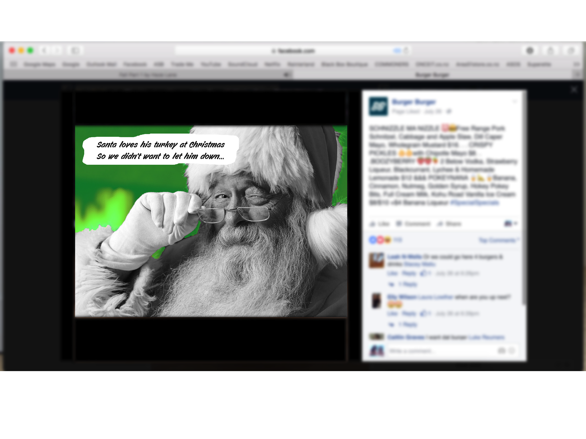

Burger Burger
This was the first project given to me during my time studying. The brief was to create a new burger for a known New Zealand restaurant that bases its menu around burgers. I headed straight towards Burger Burger as I knew they regularly asked the public for suggestions and hold competitions to have their burgers created and added to the ever changing menu. Basing the theme around a new Christmas burger, I implemented concepts for social media while keeping true to their current branding (as majority of their advertising is done through their Instagram and Facebook community).


